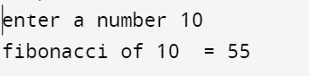

#include <stdio.h>
int fab(int n)
{
if (n == 0)
{
return 0;
}
else if (n == 1)
{
return 1;
}
else
{
return (fab(n - 1) + fab(n - 2));
}
}
void main()
{
int n;
printf("enter a number ");
scanf("%d", &n);
// printf("the fibonacci series upto %d is : ",n);
int result = fab(n);
printf("fibonacci of %d = %d\t", n, result);
}
Output:
